This page containes spoilers about How to Train Your Dragon.
Locations in How to Train Your Dragon
This is the information about some of the locations in How to Train Your Dragon.
Auction Island
Auction Island is a location in Race to the Edge where Viggo's operations take place.
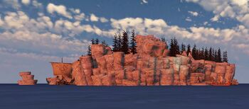Barbaric Archipelago
The Barbaric Archipelago is the whole area where the story takes place.

Berk Forest
Berk Forest is the place the riders train during Riders of Berk and Defenders of Berk.
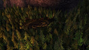Berserker Island
Berserker Island is Dagur and Heather's home in the TV show.
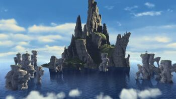Breakneck Bog
Breakneck Bog is the home of the smothering smokebreath in the TV show.
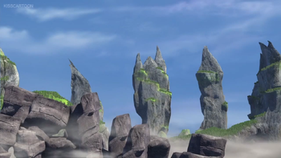Changewing Island
Changewing Island is the home of the changewings in the TV show.
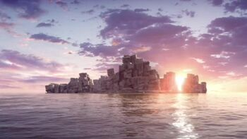Dark Deep
Dark Deep is the home of the gronckles in Race to the Edge.
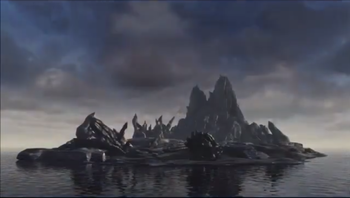Defenders of the Wing Island
Defenders of the Wing Island is the home of the eruptadon in Race to the Edge.
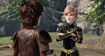Dragon Graveyard Island
Dragon Graveyard Island is where the boneknapper lives in Legend of the Boneknapper.
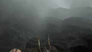Dragon Island
Dragon Island is the island where the Red Death lived in the first movie.
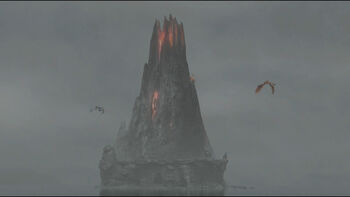Dragon's Edge
Dragon's Edge is where the riders lived when they explored "the Great Beyond" in Race to the Edge.
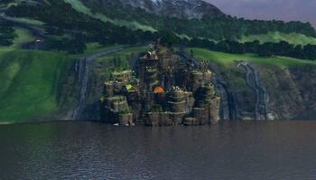Helheim's Gate
Helheim's Gate is a blanket of fog that lies between Berk and Dragon Island.
Hidden World
The Hidden World is a sanctuary for dragons in the last movie.
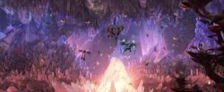Isle of Berk
The Isle of Berk is the home of the dragon riders.
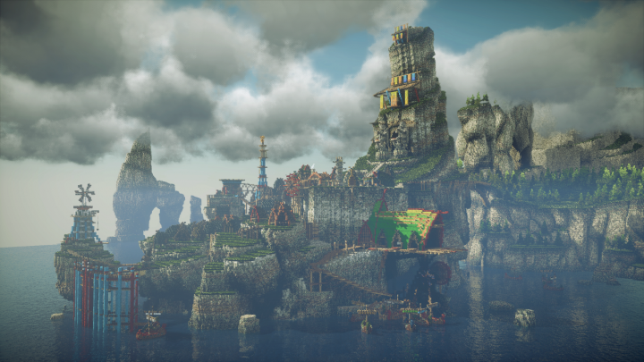Lycanwing Island
Lycanwing Island is the mythical home if the lycanwing in Race to the Edge.
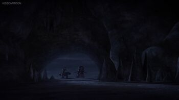Melody Island
Melody Island is the home of the death song in Race to the Edge.
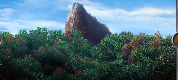Straits of Baldur
The Straits of Baldur connects Berk and Outcast Island.
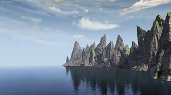Vanaheim
Vanaheim in the TV show is the last resting palce of most dragons.
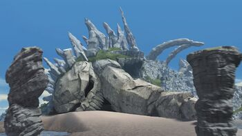Wingmaiden Island
Wingmaiden Island is a place in Race to the Edge where raserwhips are raised.
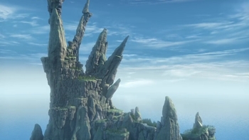Unnamed Islands
There are a lot of Unnamed Islands in How to Train Your Dragon such as the one from Legend of the Boneknapper below.
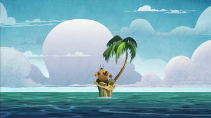